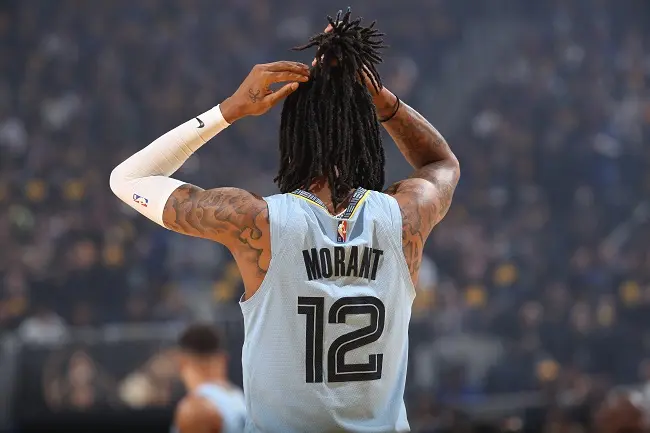

Mais Notícias

Ja Morant quer jogo de Natal entre Grizzlies e Warriors
Depois de se enfrentarem nas semifinais da Conferência Oeste, Memphis Grizzlies e Golden State Warriors
Clique aqui!
“LeBron terá que mostrar que é melhor do que eu”, desafia calouro do Pacers
Bennedict Mathurin viveu, certamente, um dos dias mais importantes de sua vida na última quinta-feira.
Clique aqui!Curry 'muito louco' e exibindo troféus, Green 'disparando pra todo lado' e mais: o melhor da festa do Golden State Warriors
O desfile de campeão do Golden State Warriors nesta segunda-feira teve de tudo.
Clique aqui!Gui Santos chora com escolha do Golden State Warriors e revela que já tinha desistido do Draft da NBA: 'Estava indo dormir'
O Brasil tem mais um jogador na NBA. Na noite da última quinta-feira (24), Gui Santos.
Clique aqui!